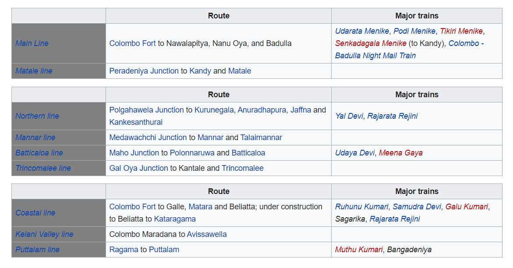

The coastal line runs south from Colombo, following the Indian Ocean, with views of beaches and coconut palm trees.Move head to see some of the most amazing routes of Sri Lanka and routes through which you can catch the train while you go for an outing and get to know about this amazing lands
